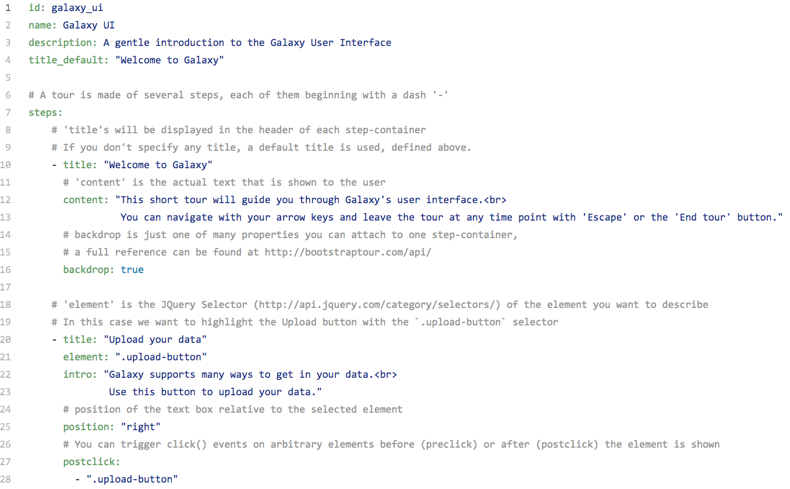

Galaxy Interactive Tours
Contributors
Authors: 
 Bérénice Batut
Bérénice Batut Björn Grüning
Björn Grüning
Questions
What is a Galaxy Interactive Tour?
How to create a Galaxy Interactive Tour?
Objectives
Discover what is a Galaxy Interactive Tour
Be able to create a Galaxy Interactive Tour
Be able to add a Galaxy Interactive Tour in a Galaxy instance
last_modification Published: Jan 12, 2017
last_modification Last Updated: Jul 9, 2021
What are Galaxy Interactive Tours?

An awesome way to learn how to use Galaxy or a specific tool, isn’t it?
How does it work?

A single YAML file: core.galaxy_ui.yaml
At the top of the YAML:
Metadata related to the Tour
id: galaxy_ui
name: Galaxy UI
description: A gentle introduction to the Galaxy User Interface
title_default: "Welcome to Galaxy"
Content of the YAML:
Steps of the Tour
# A tour is made of several steps, each of them beginning with a dash '-'
steps:
- title: "Welcome to Galaxy"
content: "This short tour will guide you through Galaxy's user interface.<br>
You can navigate with your arrow keys and leave the tour at any
time point with 'Escape' or the 'End tour' button."
backdrop: true
- title: "Upload your data"
element: ".upload-button"
content: "Galaxy supports many ways to get in your data.<br>
Use this button to upload your data."
placement: "right"
postclick:
- ".upload-button"
Definition of a step
| Argument | Description |
|---|---|
title |
Header of each step-container |
content |
Text that is shown to the user |
element |
JQuery Selector of the element you want to describe / click |
placement |
Placement of the text box relative to the selected element |
preclick or postclick |
Elements that receive a click() event before (preclick) or after (postclick) the step is shown |
textinsert |
Text to insert if element is a text box (e.g. tool search or upload) |
backdrop |
true/false: Show a dark backdrop behind the popover and its element, highlighting the current step |
.footnote[Full reference of the properties]
How to obtain the JQuery Selector of the element?

Want to integrate Interactive Tours in your Galaxy instance?
- Select a YAML file
- From our community collection of Interactive Tours
- Create one by yourself
- Copy it to your tours directory or your Galaxy instance
- default:
config/plugins/tours - configurable via
tour_config_diringalaxy.yml
- default:
- Restart Galaxy or reload the tour with the API, e.g.:
curl GALAXY_URL/api/tours/TOUR_FILE_NAME -d key=ADMIN_API_KEY
Want to contribute?
- Create Tours and share them with the world!
- on the community collection of Interactive Tours or
- add them to the Galaxy Training Network
- Improve the Tours implementation
- Improve creating of Tours
- by enhancing the Galaxy Tour Builder web extension
Developing the Tours logic
- Tours initialisation:
lib/galaxy/tours/__init__.py - JavaScript logic:
client/galaxy/scripts/mvc/tours.js - Tour styles:
client/galaxy/style/less/tour.less - API:
lib/galaxy/webapps/galaxy/api/tours.pylib/galaxy/webapps/galaxy/buildapp.py
- bootstrap-tour library:
client/galaxy/scripts/libs/bootstrap-tour.js
Key Points
- An Interactive Tour is easy to create: just a yaml file to fill
- Use the Developper Tools of find the JQuery Selector
- Help yourself by using the available web plugins and record an interactive tour
Thank you!
This material is the result of a collaborative work. Thanks to the Galaxy Training Network and all the contributors! Tutorial Content is licensed under
Creative Commons Attribution 4.0 International License.
Tutorial Content is licensed under
Creative Commons Attribution 4.0 International License.